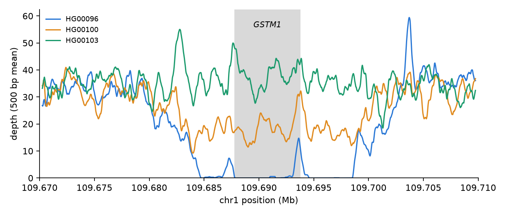
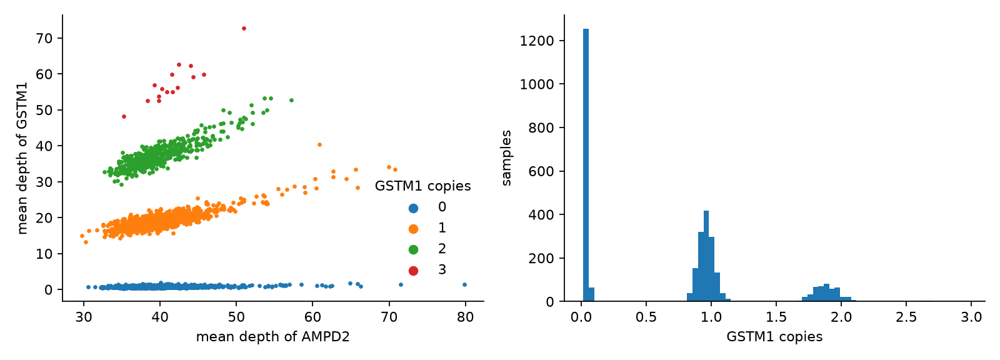

Try a public store: 1000 Genomes depth¶
This page opens a public store over HTTPS and uses it. You do not download the store. Each step reads only the chunks that it needs.
The store holds the read depth at every base of GRCh38 for the 3,202 samples of the 1000 Genomes Project 30x release.
| Property | Value |
|---|---|
| URL | https://pando-rgw.chpc.utah.edu/vollgerlab/public/pbzarr/30x-1000genomes.pbz |
| Track | depth, int32, over (position, sample) |
| Positions | 3,217,346,917 (3,366 contigs of the GRCh38 analysis set with decoy and HLA sequences) |
| Samples | 3,202 |
| Size | 1.5 TiB (41 TB as an array in memory) |
| Source | The 30x CRAM files of the New York Genome Center (Byrska-Bishop et al., Cell, 2022) |
pbz import bam made the track. The depth counts all reads that are not unmapped, secondary, duplicate, or failed quality control. It counts the overlap of a proper pair one time, and it does not count deletions.
Before you start¶
Install pbzarr. Install aiohttp also, which zarr-python uses to read from an HTTPS URL:
1. Open the store¶
import pbzarr
URL = "https://pando-rgw.chpc.utah.edu/vollgerlab/public/pbzarr/30x-1000genomes.pbz"
ds = pbzarr.open(URL)
ds
<xarray.Dataset> Size: 41TB
Dimensions: (position: 3217346917, sample: 3202, contig: 3366)
Coordinates:
* sample (sample) StringDType() 51kB 'HG00096' 'HG00097' ... 'NA21144'
contig_id (contig) StringDType() 54kB 'chr1' ... 'HLA-DRB1*16:02:01'
contig_length (contig) int64 27kB 248956422 242193529 ... 11569 11005
* reference <U8 32B '15ba844d'
Dimensions without coordinates: position, contig
Data variables:
depth (position, sample) int32 41TB dask.array<chunksize=(65536, 512), meta=np.ndarray>
The open reads the metadata only, which takes about one second. The depth track is a lazy Dask array. No depth values come from the server until you call compute().
Look at the samples and the contigs:
depth = ds["depth"]
depth.sample.values[:4] # ['HG00096' 'HG00097' 'HG00099' 'HG00100']
ds["contig_id"].values[:3] # ['chr1' 'chr2' 'chr3']
depth.attrs["description"]
2. Read one locus¶
The gene GSTM1 is absent from both chromosomes in many people. Select 40 kb around it, and read three samples:
locus = pbzarr.region(depth, "chr1:109670000-109710000")
three = locus.sel(sample=["HG00096", "HG00100", "HG00103"]).compute()
Positions are 0-based and intervals are half-open. This step reads one inner chunk for each sample, so it takes about one second.
Plot the depth as a mean over 500 bases:
HG00103 has full depth across the gene, HG00100 has half, and HG00096 has none.

3. Compute a statistic for all samples¶
Get the mean depth of GSTM1 and of a control gene, AMPD2, in each of the 3,202 samples:
import pandas as pd
regions = pd.DataFrame(
{
"chrom": ["chr1", "chr1"],
"start": [109_687_816, 109_619_836],
"end": [109_693_745, 109_632_051],
"name": ["GSTM1", "AMPD2"],
}
)
means = pbzarr.reduce_regions(depth, regions, "mean").compute()
means is an xarray.DataArray over (region, sample). On a laptop with a home connection, this step took 3 seconds.
Divide the depth of GSTM1 by the depth of the control, and multiply by 2, to estimate the number of copies:
table = means.to_pandas().set_axis(regions["name"]).T
table["copies"] = 2 * table["GSTM1"] / table["AMPD2"]
table.round(2).head()
name GSTM1 AMPD2 copies
sample
HG00096 1.13 42.34 0.05
HG00097 0.68 39.29 0.03
HG00099 0.70 44.37 0.03
HG00100 18.50 37.38 0.99
HG00101 0.80 42.12 0.04
Count the samples at each copy number:
1,317 of the 3,202 samples have no copy of GSTM1.
Plot the means. The left panel has one point for each sample, with a color for the copy number, rounded to a whole number. The right panel is a histogram of the copies column:
import matplotlib.pyplot as plt
fig, (left, right) = plt.subplots(1, 2, figsize=(10, 3.6))
groups = table["copies"].round().astype(int)
for n in sorted(groups.unique()):
rows = table[groups == n]
left.scatter(rows["AMPD2"], rows["GSTM1"], s=4, label=str(n))
left.legend(title="GSTM1 copies", loc="lower right", bbox_to_anchor=(1, 0.04), markerscale=3, frameon=False)
left.set_xlabel("mean depth of AMPD2")
left.set_ylabel("mean depth of GSTM1")
right.hist(table["copies"], bins=70)
right.set_xlabel("GSTM1 copies")
right.set_ylabel("samples")

The samples make one line for each copy number. The depth of GSTM1 increases with the depth of the control gene, and the slope of the line gives the number of copies.
4. Close the store¶
Where next¶
- Depth in regions: more statistics, and regions from a BED file.
- Compare samples: compare each sample with the cohort.
- Zarr, xarray, and Dask: how the lazy arrays work.